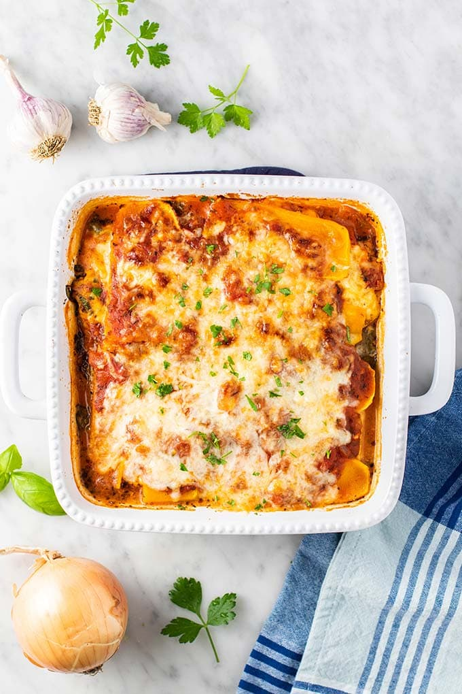

Butternut Squash Lasagna

This healthy Butternut Squash Lasagna is the perfect fall dinner to warm up to
Layers of butternut squash, spinach, and cheese bake into a gourmet dinner
I also decided to add a twist and include layers of ricotta and pasta sauce
Ingredients
For Butternut Squash Sauce
- 1 small butternut squash
- 6-8 cloves of garlic, peeled and left whole
- 1 cup of raw cashews
- 2 tbsp of lemon juice
- 1 tbsp of nutritional yeast (optional)
- 1 cup of water (plus more as needed)
- olive oil
For Ricotta Mix
- 8 oz of ricotta cheese
- 16 oz of baby spinach
- 1 tbsp of olive oil
- 1/4 cup of mozzarella cheese
- 1/4 cup of grated parmesan cheese
- salt and pepper to taste
For Pasta Sauce
- 28 oz can of San Marzano
- 1 small onion
- 2 tbsp of olive oil
- 1 tsp of dried oregano
- 1 tsp of dried basil
- salt and pepper to taste
- a pinch of sugar
Noodles
- 12 sheets lasagna noodle
- salt to taste
- mozzarella cheese
Instructions
- Preheat oven to 425 F and line a baking sheet with parchment paper. Slice your squash in half lengthwise and remove the seeds, but leave the skin on. Rub squash flesh with a bit of oil. Place garlic cloves on the prepared baking sheet and top with squash cut side down (the scooped-out squash should cover the garlic so it doesn't burn). Bake for 30-40 minutes, or until the skin is blistered and golden brown and a knife inserted into the squash comes out very easily.
- While the squash is cooking, open up the can of san marzano tomatoes and crush everything by hand until a you get a nice consistency. Dice your small onion and add your olive oil to a pan on medium heat. Once the pot is hot add your diced onions, san marzano tomatoes and spices. Mix everything together and let the sauce cook down for at least 45 mins or to a thick consistency.
- While the squash and sauce are cooking we can make our ricotta mixture. First heat a pan with olive oil and add spinach. Cook the spinach down until it wilts and then let it cool. While the spanish is cooling get a bowl and add the ricotta, cheeses, salt and pepper and mix. Then take the spanish and squeeze the excess water out. Afterward chop the spinach and add to the mixture.
- Next bring a large pot of salted water to a boil. Cook the lasagna noodles in the salted water according to package instructions or until al dente.
- Once the squash is tender and cool enough to handle, scoop the roasted squash into a high-speed blender. Add roasted garlic cloves, cashews, lemon juice, salt, nutritional yeast (optional), and water and blend until smooth. Add more water and scrape down the sides of the blender as needed. It should be thick, creamy, and scoopable. Taste and adjust as needed, adding more salt for overall flavor, lemon for brightness, garlic for savory flavor, or nutritional yeast for cheesiness.
- Lower the oven to 375 degrees
- Assemble the lasagna in a 9 x 13 (or similar size) glass or ceramic baking dish. Add 1/2 cup of pasta sauce to the bottom of the pan and spread it evenly. Then add a layer of noodles followed by 1/3 of the ricotta and butternut squash filling. Repeat with two more layers of sauce, noodles, and filling. Then finish with a layer of noodles and the remaining sauce as the top layer (it should be a thicker layer fully coating the noodles). Lastly, top if off with mozzarella cheese.
- Before putting the baking dish in the oven to cook wrap the top with foil. Then put the baking dish to cook for 25 mins.
- After 25 mins, remove the foil and turn the baking dish 180 degrees and let it cook for another 10 mins until the top is browning and bubbly.
- Once done take out the dish from the oven and allow to sit and set for 10 minutes prior to slicing.